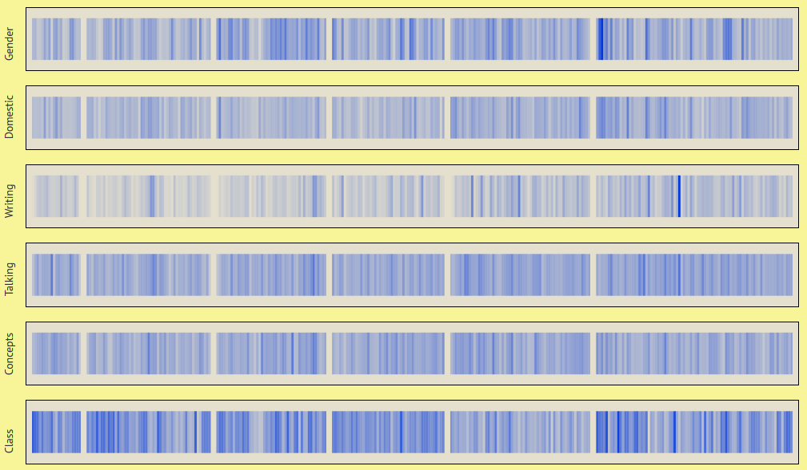

The Barsestshire Chronicles
Between 1855 and 1867, Anthony Trollope published the six novels that would come to make up The Barsestshire Chronicles. In these classics works of mid-Victorian literature, Trollope demonstrates an early form of world-building. Characters, narratives, and geography connect the novels to one another, as do themes and narrative style.
In this visualization, we look at how frequently themes come up in each chapter of the series. Each row has a theme, each rectangle represents a chapter, and chapters are contained within books. The darker the rectangle, the more prominent that theme is within the chapter. Scroll over a rectangle for more information.
This data was taken from Project Gutenberg, and visualized with d3.js. You can learn more about this project here. If you have any questions or comments about my work,
then feel free to get in touch.
PJ Trainor, 2016
Use a larger screen to see the full interactive image
If you expand the window, try refreshing the page
This chapter is:
Percentage of words related to topic: